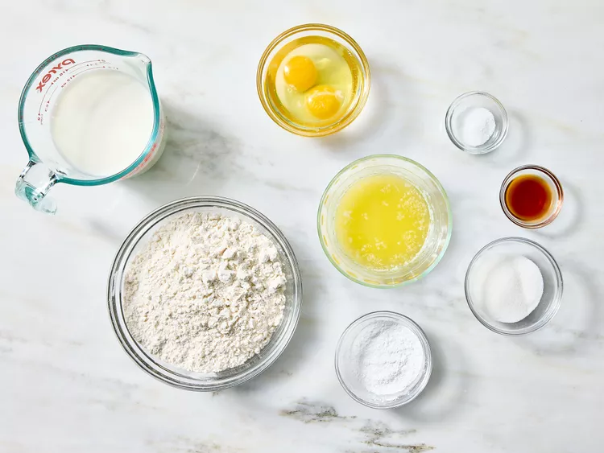
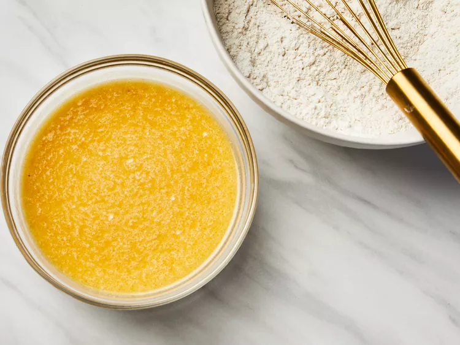
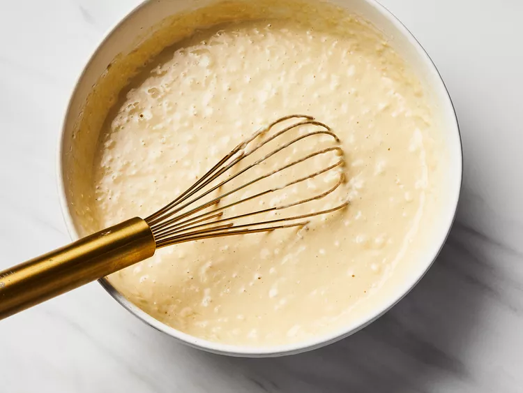
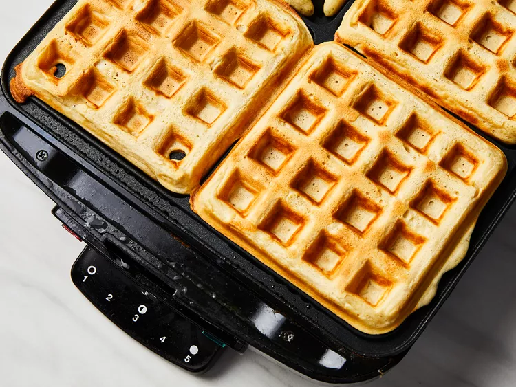

Classic Waffles

Description
A waffle is a dish made from usually leavened batter or dough that
is cooked between two plates that are patterned to give a characteristic size,
shape, and surface impression.
By following this recipe, this classic waffles will certainly turn out lovely and crispy,
perfect for any day of the week!
Ingredients
- 2 cups of all-purpose flour
- 1 teaspoon of salt or to taste
- 4 teaspoons of baking powder
- 2 tablespoons of white sugar
- 2 large eggs
- 1 ½ cups of warm milk
- ⅓ cup of butter, melted
- 1 teaspoon of vanilla extract
Steps
- Gather all ingredients

- Mix flour, salt, baking powder, and sugar together in a large bowl; set aside.
Preheat waffle iron to desired temperature.

- Beat eggs in a separate bowl; stir in milk, butter, and vanilla.

- Pour milk mixture into flour mixture; beat until blended.

- Ladle batter into a preheated waffle iron.

- Cook waffles until golden and crisp.

- Serve immediately and enjoy!

Home